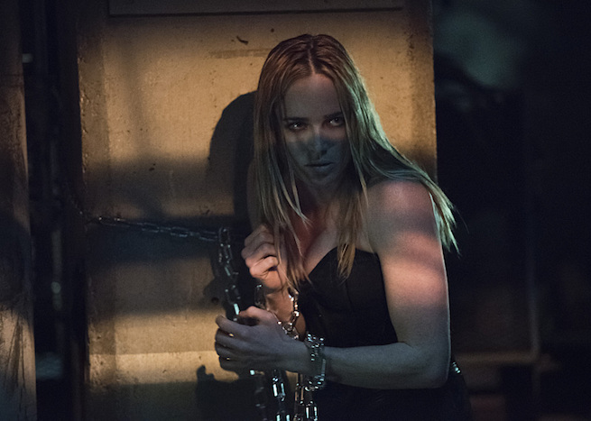

Arrow S04|E04 Beyond Redemption
This week’s Arrow installment wasn’t concerned with introducing a flashy new villain or an earth-shattering plot twist. The show already has plenty of material to juggle as it is. After last week’s episode completely ignored Ollie’s decision to run for mayor, that particular subplot became the focus this time around. In a clever little twist, Ollie took over Sebastian Blood’s old office, morphing into both his campaign headquarters and the location of the new Arrow Cave (or Quiver, or whatever they end up calling it). The new digs are pretty swanky despite the odd power outage, and there’s even room for Ollie’s trusty salmon ladder in the corner.
This episode had a great emotional core as it focused so much attention on Ollie’s relationship with Quentin. The strongest scenes weren’t the big, action-packed shootouts or even those featuring Neal McDonough’s Damien Darhk (though he was great, as usual). They were the pair of scenes set in Quentin’s apartment. Their first encounter especially was a terrific moment as Ollie opened himself up and revealed how much he’s always wanted to prove to Quentin the man he can be. That was mixed with a sense of rage and betrayal at learning about Quentin’s dealings with Darhk. Both Stephen Amell and Paul Blackthorne were terrific in this scene, with the latter delivering what may have been his finest performance on the show to date.
This week Quentin learned that Sara is alive, if not particularly well. His initial shock and dismay upon seeing her alive was good, but the real kicker came when he tried to follow Darhk’s advice and put Sara out of her misery. Seeing Quentin break down in tears was another punch to the gut. I wasn’t expecting to connect with the character so strongly in light of his dirty dealings with Darhk, but this episode was really great about exploring the tortured double life Quentin leads and the possible salvation he’s found after patching up his relationship with Ollie.

I will say that this episode did no favors for Laurel. Her character was already at a low point after last week’s episode, where she ignored the advice of everyone around her and selfishly chose to bring her sister back to life. Now she has Sara chained up in a basement and chose to put her already physically frail father through an emotional meat grinder. No super-powers this week, just two teams of highly trained soldiers going to war with each other. It’s always fun to see Team Arrow functioning as a well-oiled unit. These antagonists fit the general theme of the episode well, as they were less villains than cops resorting to extreme measures to protect their dying city. It was a little hard to buy them as the heroes of their own story when their philosophy was basically “We don’t kill cops. Unless they happen to be in our way or whatever.” Even so, Liza Warner (True Blood’s Rutina Wesley) made for a charismatic front woman for this group. I wouldn’t mind it at all if Warner to have a recurring role and a redemptive arc of sorts over the course of the season.
Felicity continues to be the most entertaining character on the show this season, whether she’s bankrolling Ollie’s campaign, running point for Team Arrow or off doing her own thing with Curtis. I am concerned that she’s going to fall into a similar trap as she did last season, with her storylines becoming completely divorced with what’s going on with the rest of the gang. Hopefully once the Ray Palmer mystery resolves itself, the two halves of the show will better align again.
The flashbacks built a little steam this week as Ollie became a Yao Fei mentor figure of sorts even as he struggled to maintain his cover. His interaction with Conklin was a little “on the nose” in how it emphasized Ollie’s inner darkness, but still effective. And with Conklin discovering the truth about his newest employee, things on the island are likely to heat up rather quickly. This episode wrapped up on a great note, too, as Ollie publically announced his candidacy and delivered a rousing speech. Amell made me believe that Oliver Queen is someone who can unite and inspire the city without needing to slap on a green hood and shoot people. Perhaps the real success of this season so far is that, despite the darker elements at work, there’s a newfound sense of hope and optimism driving our heroes. We might as well savor that, because it’s pretty clear it won’t last forever.
Next weeks episode preview: